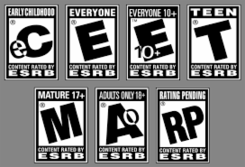

"Are Video Games for Kids?"
Whether you are a gamer, curious parent, or a video game developer, you are in the right place. Here you will find everything you need to know about video game ratings. You will be able to learn what all the video game ratings are, what they mean, and why we have them in the first place.
There are a current total of 6 ratings determined by the ESRB (Entertainment Software Rating Board). These ratings are E for everyone, E10+ for everyone age 10 and older, T for teenagers age 10-16, M for those age 17 and up, and AO for adults 18 and up. There is one last rating titled "RP" for rating pending, that just means the video game has no rating yet.
Why have video game ratings?
The rating system was created to give parents an understanding of what children were being exposed to when playing video games. On every game's rating, content descriptors that may have triggered a specific rating can also be seen such as "violence" or "strong language". Academic experts in child development assisted in creating this system based on what type of information they believe is most important for parents to be aware of. Over time, it also became important for parents to understand how players interacted online and how real money is spent on in-game items/currency.

Rating Process
All video games must submitted to the ESRB for review for a rating before they can be released to the public for purchase.
- First, video game publishers must send in a completed questionnaire describing any content that would that play a factor in the game rating such as sexual content, language, violence,reward systems etc.
- Secondly, publishers must submit a video showing gameplay that gives an example of the missions and cutscenes. This gameplay video has to specifically show the most "extreme" content the game offers. Any unplayable content that may be rated diffrently than the rest of the game must also be disclosed for review.
Content Descriptors
- Alcohol Reference
- Drug Reference
- Tobacco Reference
- Animated Blood
- Blood and Gore
- Intense Violence
- Fantasy Violence
- Cartoon Violence
- Comic Mischief
- Crude Humor
- Strong Language
- Nudity
- Real Gambling
- Simulated Gambling
- Sexual Content
- Sexual Violence
- More...